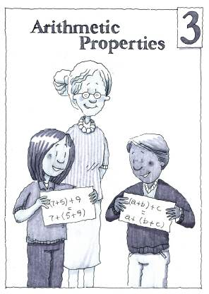

Chapter 3
Arithmetic Properties
Navigation is reserved for this future chapter. Add the chapter source later and these links can become active without changing the textbook structure.
Lessons
- 3 OpeningChapter 3 OpeningFuture unit
- 3.1.1Grouping ExpressionsFuture unit
- 3.1.2Identifying Terms in ExpressionsFuture unit
- 3.2.1Subtraction of IntegersFuture unit
- 3.2.2Connecting Addition and SubtractionFuture unit
- 3.2.3Multiplication as Repeated SubtractionFuture unit
- 3.2.4Multiplication of DecimalsFuture unit
- 3.2.5Addition, Subtraction, Multiplication, and Division of IntegersFuture unit
- 3.3.1Division with Rational NumbersFuture unit
- 3.3.2Division with DecimalsFuture unit
- 3.3.3Arithmetic PropertiesFuture unit
- 3 ClosureChapter 3 ClosureFuture unit